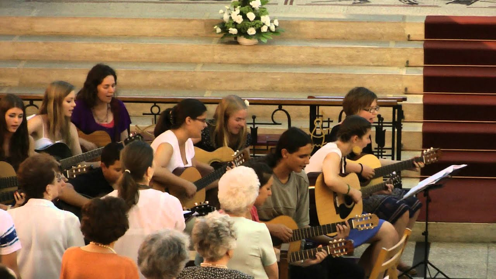
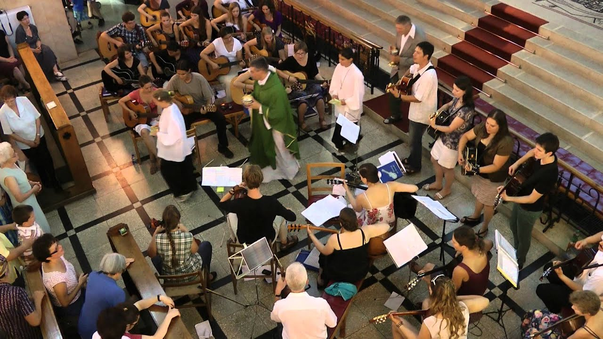
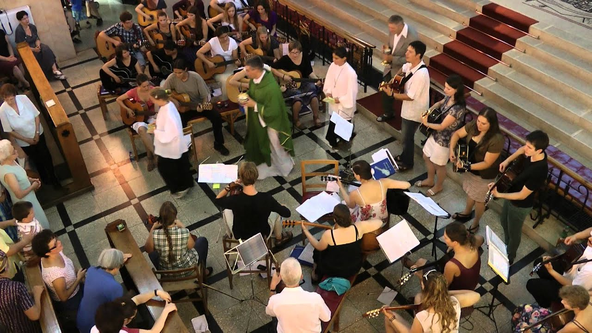

Gitaros ir bosai | Styginiai instrumentai | Muzikos faktorius
2020.10.29 07:39

English Prisijungimas Prisijungimas Krepšelis Krepšelis tuščias. Viso prekių už 0 € Peržiūrėti krepšelį 8 5 277 97 70
mūsų kontaktai
Yamaha produkcija Instrumentai Gitaros ir bosai Klavišiniai instrumentai Būgnai Pučiamieji instrumentai Griežiamieji instrumentai Studijos įranga Ausinės Garso plokštės Studijnės garso kolonėlės PA įranga Aktyvios kolonėlės Aktyvios žemų dažnių kolonėlės Pasyvios kolonėlės Pasyvios žemų dažnių kolonėlės Analoginiai mikšeriai Skaitmeniniai mikšeriai Mikšeriai su stiprintuvu Garso stiprintuvai Garso kolonėlių komplektai Klavišiniai instrumentai Instrumentai Pianinai Fortepijonai Sintezatoriai Stacionarūs skaitmeniniai pianinai Portatyvūs skaitmeniniai pianinai Akordeonai Vargonai Priedai, dalys Dėklai Akordeonų diržai Stovai, laikikliai Stovų priedai Pedalai Kėdutės Metronomai Matinimo blokeliai Stiprintuvai, įgarsinimas Įvairūs priedai ir dalys Styginiai instrumentai Gitaros ir bosai Akustinės gitaros Akustinės gitaros su pajungimu Klasikinės gitaros Klasikinės gitaros su pajungimu Elektrinės gitaros Bosinės gitaros Ukulelės, gitarėlės, kelioninės gitaros Dvylikastygės gitaros Griežiamieji instrumentai Smuikai Violončelės Kontrabosai Kiti styginiai instrumentai Bandžos Mandolinos Priedai, dalys Stiprintuvai, įgarsinimas, priedai ir dalys Strykai Stygos Dėklai Stovai, laikikliai Laidai su jungtimis Diržai ir tvirtinimo sistemos Derintuvai, metronomai Efektai ir jų priedai, dalys Maitinimo blokeliai ir jų priedai Priežiūros priemonės Dalys Kiti priedai Būgnai, perkusija Būgnai Akustinių būgnų komplektai Elektroniniai būgnai Lėkštės Marširavimo instrumentai Soliniai būgnai Perkusija Cajon būgnai Džembės Kalimbos ir sansulos Marakasai, barškalai Tambūrinai Šamano būgnai Lietaus vamzdžiai Metalofonai, ksilofonai Mėnulio būgnai Kongai, bongai Kita perkusija Priedai, dalys Lazdelės ir šluotelės Plastikai Dėklai Kėdutės Stovai, laikikliai, priedai Pedalai Priežiūros priemonės Dalys Treniruokliai Įvairūs priedai ir dalys Stiprintuvai elektroniniams būgnams Pučiamieji instrumentai Tradiciniai instrumentai Saksofonai Trimitai Klarnetai Išilginės fleitos Fleitos Kornetai Tūbos Fliugelhornai Valtornos Trombonai Eufonijos Althornai Kiti pučiamieji instrumentai Didžeridū Okarinos Lūpinės armonikėlės Melodikos Dambreliai Įvairūs pučiamieji instrumentai Priedai, dalys Liežuvėliai Surdinos Pūstukai Dėklai Stovai, laikikliai Diržai Priežiūros priemonės Natų stovai Ligatūros Lyros Garso technika PA įranga Mikšeriai Mikrofonai Garso kolonėlės Garso stiprintuvai Garso procesoriai ir efektai Garso kolonėlių komplektai Laidai, jungtys ir perėjimai Bevielė įranga Stovai Priedai Studijos įranga Ausinės Mikrofonai Garso plokštės Studijinės garso kolonėlės Studijinės įrangos komplektai MIDI klaviatūros ir kontroleriai Akustinės medžiagos Programinė įranga Priešstiprintuviai Diktofonai Ritmo mašinos, sempleriai, sintezatoriai DJ įranga Ausinės Garso plokštės Kontroleriai ir grotuvai Patefonų adatos Plokštelės ir kompaktiniai diskai Patefonai Mikšeriai Priedai Scena ir apšvietimas Apšvietimo įranga Lazeriai Prožektoriai LED ekranai Stroboskopai Judančios šviesos Apšvietimo komplektai LED apšvietimo technika Apšvietimo valdymo pultai Dekoracinė apšvietimo technika Dūmų, sniego ir burbulų mašinos Priedai Laidai Stovai Skystis ir kvapai Apšvietimo lemputės Dėžės ir transportavimo krepšiai Akcijos, išpardavimas
Prekių katalogas
Yamaha produkcija Instrumentai Gitaros ir bosai Akustinės gitaros Klasikinės gitaros Elektrinės gitaros Bosinės gitaros Silent gitaros Stiprintuvai ir priedai Klavišiniai instrumentai Pianinai Stacionarūs skaitmeniniai pianinai Portatyvūs skaitmeniniai pianinai Sintezatoriai Priedai Būgnai Elektroniniai būgnai Akustiniai būgnai Pučiamieji instrumentai Išilginės fleitos Fleitos Piccolo fleitos Klarnetai Saksofonai Trimitai Pūstukai Kiti pučiamieji instrumentai Griežiamieji instrumentai Smuikai Violončelės Silent instrumentai Elektriniai instrumentai Anglies pluošto strykai Priedai Studijos įranga Ausinės Garso plokštės Studijnės garso kolonėlės PA įranga Aktyvios kolonėlės Aktyvios žemų dažnių kolonėlės Pasyvios kolonėlės Pasyvios žemų dažnių kolonėlės Analoginiai mikšeriai Skaitmeniniai mikšeriai Mikšeriai su stiprintuvu Garso stiprintuvai Garso kolonėlių komplektai Klavišiniai instrumentai Instrumentai Pianinai Fortepijonai Sintezatoriai Stacionarūs skaitmeniniai pianinai Portatyvūs skaitmeniniai pianinai Akordeonai Vargonai Priedai, dalys Dėklai Akordeonų diržai Stovai, laikikliai Stovų priedai Pedalai Kėdutės Metronomai Matinimo blokeliai Stiprintuvai, įgarsinimas Įvairūs priedai ir dalys Styginiai instrumentai Gitaros ir bosai Akustinės gitaros Akustinės gitaros su pajungimu Klasikinės gitaros Klasikinės gitaros su pajungimu Elektrinės gitaros 6 stygų elektrinės gitaros 7 stygų elektrinės gitaros Bosinės gitaros 4 stygų bosinės gitaros 5 stygų bosinės gitaros Akustinės bosinės gitaros Ukulelės, gitarėlės, kelioninės gitaros Sopraninės ukulelės Koncertinės ukulelės Tenorinės ukulelės Bosinės ukulelės Gitarėlės Kelioninės gitaros Dvylikastygės gitaros Griežiamieji instrumentai Smuikai 4/4 dydžio smuikai 3/4 dydžio smuikai 1/2 dydžio smuikai 1/4 dydžio smuikai Kitų dydžių smuikai Violončelės 4/4 dydžio violončelės 3/4 dydžio violončelės 1/2 dydžio violončelės 1/4 dydžio violončelės Kitų dydžių violončelės Kontrabosai Kiti styginiai instrumentai Bandžos Mandolinos Priedai, dalys Stiprintuvai, įgarsinimas, priedai ir dalys Stiprintuvai elektrinėms gitaroms Stiprintuvai bosinėms gitaroms Stiprintuvai akustiniams instrumentams Stiprintuvai be kolonėlių elektrinėms gitaroms Stiprintuvai be kolonėlių bosinėms gitaroms Elektrinių gitarų kolonėlės Bosinių gitarų kolonėlės Belaidės sistemos Portatyvios kolonėlės Garso ėmikliai Lempos stiprintuvams Stovai, laikikliai Kanalų perjungimo pedalai Įvairūs priedai ir dalys stiprintuvams Strykai Strykai smuikams Strykai violončelėms Strykai kontrabosams Plaukai strykams Stygos Stygos akustinėms gitaroms Stygos klasikinėms gitaroms Stygos elektrinėms gitaroms Stygos bosinėms gitaroms Stygos 12-stygėms gitaroms Stygos ukulelėms Stygos smuikams Stygos violončelėms Stygos kotrabosams Stygos kitiems instrumentams Stygos po vieną Dėklai Dėklai akustinėms gitaroms Dėklai klasikinėms gitaroms Dėklai elektrinėms gitaroms Dėklai bosinėms gitaroms Dėklai smuikams Dėklai violončelėms Dėklai kontrabosams Dėklai ukulelėms, gitarėlėms Dėklai kitiems styginiams instrumentams Stovai, laikikliai Stovai, laikikliai gitaroms Stovai, laikikliai griežiamiesiems instrumentams Stovai, laikikliai ukulelėms, gitarėlėms Stovai, laikikliai kitiems instrumentams Laidai su jungtimis Diržai ir tvirtinimo sistemos Derintuvai, metronomai Efektai ir jų priedai, dalys Efektų procesoriai Overdrive, distortion, fuzz efektai Chorus, flanger, phaser efektai Delay, reverb, echo efektai Looper efektai Compressor, gate, equalizer efektai Wah wah pedalai Volume, expression pedalai Derintuvai Įvairūs efektai Dėžės, dėklai efektams Maitinimo blokeliai ir jų priedai Priežiūros priemonės Dalys Potenciometrai, jungikliai Derinimo mašinėlės Tiltai, stygų tvirtinimo sistemos Valdymo rankenėlės Jungtys, laidai Įvairios dalys Kiti priedai Brauktukai Antpirščiai (slide) Kapodasteriai Pakojos Pasmakrėlės Pečių atramėlės ir jų dalys Surdinos Kanifolija Įvairūs priedai Būgnai, perkusija Būgnai Akustinių būgnų komplektai Elektroniniai būgnai Lėkštės Crash lėkštės Ride lėkštės Hi-hat lėkštės Splash lėkštės China lėkštės Lėkščių rinkiniai Marširavimo instrumentai Soliniai būgnai Perkusija Cajon būgnai Džembės Kalimbos ir sansulos Marakasai, barškalai Tambūrinai Šamano būgnai Lietaus vamzdžiai Metalofonai, ksilofonai Mėnulio būgnai Kongai, bongai Kita perkusija Priedai, dalys Lazdelės ir šluotelės Lazdelės Šviečiančios lazdelės Šluotelės Orkestrinės lazdelės Rute, tala wand lazdelės Įvairios lazdelės Plastikai Dėklai Būgnų dėklai Lėkščių dėklai Stovų dėklai Lazdelių dėklai Kėdutės Stovai, laikikliai, priedai Lėkščių stovai Solinių būgnų stovai Hi-hat stovai Stovų rinkiniai Būgnų stovų priedai Pedalai Priežiūros priemonės Dalys Treniruokliai Įvairūs priedai ir dalys Stiprintuvai elektroniniams būgnams Pučiamieji instrumentai Tradiciniai instrumentai Saksofonai Altiniai saksofonai Tenoriniai saksofonai Sopraniniai saksofonai Trimitai Klarnetai Išilginės fleitos Sopraninės išilginės fleitos Altinės išilginės fleitos Tenorinės išilginės fleitos Bosinės išilginės fleitos Sopranininės išilginės fleitos Fleitos Kornetai Tūbos Fliugelhornai Valtornos Trombonai Eufonijos Althornai Kiti pučiamieji instrumentai Didžeridū Okarinos Lūpinės armonikėlės Melodikos Dambreliai Įvairūs pučiamieji instrumentai Priedai, dalys Liežuvėliai Liežuvėliai altiniam saksofonui Liežuvėliai klarnetui Liežuvėliai sopraniniam saksofonui Liežuvėliai tenoriniam saksofonui Liežuvėliai baritoniniam saksofonui Surdinos Pūstukai Dėklai Stovai, laikikliai Diržai Priežiūros priemonės Natų stovai Ligatūros Lyros Garso technika PA įranga Mikšeriai Analoginiai mikšeriniai pultai Skaitmeniniai mikšeriniai pultai Mikšeriniai pultai su stiprintuvu Priedai mikšeriniams pultams Mikrofonai Vokaliniai mikrofonai Dinaminiai mikrofonai Kondensatoriniai mikrofonai Instrumentiniai mikrofonai Didelės diafragmos mikrofonai Mažos diafragmos mikrofonai Bevieliai mikrofonai Bevielės sistemos su rankiniu mikrofonu Bevielės sistemos su lankeliu Bevielės sistemos su prisegamu mikrofonu Bevielių mikrofonų krovimo stotelės USB mikrofonai Video mikrofonai Konferenciniai mikrofonai Konferencinės ir gidų sistemos Konferenciniai mikrofonai Megafonai Matavimo mikrofonai Mikrofonų komplektai Prisegami mikrofonai Priedai mikrofonams Karaoke Garso kolonėlės Aktyvios garso kolonėlės Aktyvios žemų dažnių kolonėlės Pasyvios garso kolonėlės Pasyvios žemų dažnių kolonėlės Portatyvios garso kolonėlės Instaliacinės garso kolonėlės Garso stiprintuvai Garso procesoriai ir efektai Garso kolonėlių komplektai Laidai, jungtys ir perėjimai Laidai su jungtimis Laidai mikrofonams Laidai kolonėlėms Audio laidai MIDI laidai Skaitmeninės sąsajos laidai Daugiagysliai laidai DMX laidai Maitinimo laidai Laidai be jungčių Jungtys XLR JACK RCA Speakon Perėjimai Bevielė įranga Bevielės sistemos su rankiniu mikrofonu Bevielės sistemos su lankeliu Bevielės sistemos su prisegamu mikrofonu Bevielės instrumentinės sistemos IN-EAR monitoringo sistemos Bevielės stereo sistemos Stovai Stovai mikrofonams Stovai kolonėlėms Stovai kompiuteriams Sieniniai kolonėlių laikikliai Įvairūs stovai Priedai DI-BOX Baterijos ir blokeliai Dėklai, dėžės ir transportavimo krepšiai Kiti priedai Klausos apsauga Studijos įranga Ausinės Studijos ausinės IN-EAR ausinės Belaidės ausinės Laisvalaikio ausinės Priedai ausinėms Mikrofonai Garso plokštės Studijinės garso kolonėlės Aktyvios artimo lauko kolonėlės Aktyvios vidutinio lauko kolonėlės Aktyvios žemų dažnių kolonėlės Kolonėlių komplektai Kolonėlių garso valdikliai Studijinių kolonėlių stovai Studijinės įrangos komplektai MIDI klaviatūros ir kontroleriai MIDI klaviatūros MIDI kontroleriai DAW kontroleriai Akustinės medžiagos Programinė įranga Priešstiprintuviai Ausinių priešstiprintuviai Mikrofonų priešstiprintuviai Diktofonai Ritmo mašinos, sempleriai, sintezatoriai DJ įranga Ausinės Garso plokštės Kontroleriai ir grotuvai Patefonų adatos Plokštelės ir kompaktiniai diskai Patefonai Mikšeriai Priedai Scena ir apšvietimas Apšvietimo įranga Lazeriai Prožektoriai LED ekranai Stroboskopai Judančios šviesos Apšvietimo komplektai LED apšvietimo technika Apšvietimo valdymo pultai Dekoracinė apšvietimo technika Dūmų, sniego ir burbulų mašinos Priedai Laidai Stovai Skystis ir kvapai Apšvietimo lemputės Dėžės ir transportavimo krepšiai Akcijos, išpardavimas Pradžia / Styginiai instrumentai / Gitaros ir bosaiGitaros ir bosai
Akustinės gitaros Akustinės gitaros su pajungimu Klasikinės gitaros Klasikinės gitaros su pajungimu Elektrinės gitaros 6 stygų elektrinės gitaros 7 stygų elektrinės gitaros Bosinės gitaros 4 stygų bosinės gitaros 5 stygų bosinės gitaros Akustinės bosinės gitaros Ukulelės, gitarėlės, kelioninės gitaros Sopraninės ukulelės Koncertinės ukulelės Tenorinės ukulelės Bosinės ukulelės Gitarėlės Kelioninės gitaros Dvylikastygės gitaros 1 - 24 iš 578 Elektrinė gitara Caparison Angelus HGS 3220 € Elektrinė gitara TAYLOR T5-C1 3070 € Akustinė gitara Taylor 814-CE 2954 € Elektrinė gitara Caparison HORUS HGS 2670 € TAYLOR 354-CE 1880 € Klasikinė Gitara Antonio Sanchez 1035 1712 € Elektrinė Gitara Fender Standard Telecaster RW 113200738 1709 € AKUSTINĖ GITARA SU PAJUNGIMU LAG THV-30DCE TRAMONTANE HYVIBE 1498 € -5 % Elektrinė gitara ESP LTD VIPER 1434 € 1507 € Sutaupykite 73 € Elektrinė gitara Fender FSR Japan '54 Stratocaster 2TS 251500503 1399 € -15 % Elektrinė gitara Parker NiteFly - Mahogany 1346 € 1583 € Sutaupykite 237 € Klasikinė Gitara Su Pajungimu Salvador Cortez CF-120CE Flamenco Series 1346 € Elektrinė gitara TAYLOR SB-X2 1340 € Akustinė Gitara Su Pajungimu Cort SFX-LE2 Custom Shop Limited Edition All Solid 1303 € -22 % Bosinė gitara Cort ABMP-1 1300 € 1670 € Sutaupykite 370 € Elektrinė gitara Fender Classic Player Jaguar Special HH 141710300 1299 € Elektrinė gitara Fender Classic Series '72 Telecaster Deluxe 137702300 1299 € AKUSTINĖ GITARA SU PAJUNGIMU LAG THV-20DCE TRAMONTANE HYVIBE 1298 € -16 % Akustinė Gitara Su Pajungimu Yamaha A-5M ARE VN 1289 € 1529 € Sutaupykite 240 € Klasikinė Gitara Salvador Cortez CC-140 All Solid Master Series 1199 € -21 % Elektrinė gitara CORT ZMP-1 1158 € 1466 € Sutaupykite 308 € -20 % Akustinė gitara PARKER P-10EN 1108 € 1384 € Sutaupykite 276 € Bosinė gitara Ibanez SR-1200 VNF Bass Guitar - Vintage Natural Flat 1100 € Elektrinė gitara Ibanez MTM-1 Mick Thomson Signature 1099 € 1 2 3 Apie mus Paslaugos Pirkimo taisyklės Informacija perkantiems Kontaktai PRIVATUMO POLITIKA Pirkėjo gidas COVID-19 Muzikos faktorius © 2020 UAB "MUZIKOS FAKTORIUS". Be UAB "MUZIKOS FAKTORIUS" sutikimo draudžiama kopijuoti ir platinti svetainėje esančią informaciją. El. parduotuvių nuoma: verskis.lt Į viršų- Gitaros ir bosai | Styginiai instrumentai | Muzikos faktorius
- Pradedantiesiems – Gitaros Pamokos
- Gitaros derinimas :: 6stygos.webnode.com
- Gitaros - Midiaudio
- Gitaros - ATTRADEMUSIC.LT
- Gitaros studija "Dream On"-Individualios gitaros pamokos ...
- Gitaros derintuvas - GROJAM
- Gitaros - GROJAM
- Elektrinės gitaros | Gitaros ir bosai | Styginiai ...
- Gitaros - Milgreta
- Gitaros ir bosai | Styginiai instrumentai | Muzikos faktorius
Kokybiškos akustinės, klasikinės, bosinės, elektrinės ir kitos gitaros gera kaina. Platus gitarų komplektų ir priedų pasirinkimas. Kokybės garantija. Greitas pristatymas.
- Pradedantiesiems – Gitaros Pamokos
Populiariausi dainų akordai (pagal kalbą) Angliškų dainų gitaros akordai. TOP 20 Angliškų dainų
- Gitaros derinimas :: 6stygos.webnode.com
Prastesnės kokybės gitaros laikomos nepalankiomis sąlygomis (svyruojanti oro temperatūra ir oro drėgmė) išsiderina net nekliudomos per vieną, dvi dienas. Gitara gana greitai išsiderina, jei ja grojant yra atliekami patempimai (bend'inimai). Gitaros derinimo būdai. Aš išskirčiau du gitaros derinimo būdus:
- Gitaros - Midiaudio
Muzikos instrumentai ir muzikos prekės Tamsta internetinėje parduotuvėje. Gitaros, būgnai, klavišiniai, pučiamieji, styginiai, pro audio ir kita.
- Gitaros - ATTRADEMUSIC.LT
Gitaros video pamokos pradedantiesiems gitaristams Showing 1–16 of 36 results ...
- Gitaros studija "Dream On"-Individualios gitaros pamokos ...
Gitaros pamokų e-parduotuvė 2016-07-19 Kuo skiriasi akustinė gitara nuo klasikinės 2016-06-09 Grupės “Jam Jam” albumas “Ir viskas bus kitaip” 2016-02-08
- Gitaros derintuvas - GROJAM
individualias gitaros pamokas kaune, mokinant groti akustine, klasikine ir elektrine gitara, organizuojame nuo 2006 metŲ, tad atvykite pirmam susitikimui ir patikrinkite save bei savo galimybes iŠmokti groti gitara. „dream on“ gitaros studijoje surasime sprendimus visiems muzikos skoniams tiek suaugusiesiems, tiek vaikams nuo 10 metŲ. pamokos vedamos lietuvių ir anglų kalbomis.
- Gitaros - GROJAM
Gitaros ir bosai. Akustinės gitaros. Akustinės gitaros su pajungimu. Klasikinės gitaros. Klasikinės gitaros su pajungimu. Elektrinės gitaros. 6 stygų elektrinės gitaros . 7 stygų elektrinės gitaros . Bosinės gitaros. 4 stygų bosinės gitaros
- Elektrinės gitaros | Gitaros ir bosai | Styginiai ...
Gitaros derintuvai Jums už geras kainas. Išsirinkite sau tinkamą derintuvą!
- Gitaros - Milgreta
Akustinės gitaros kairiarankiams Siekiant pagerinti naršymo kokybę, mes naudojame slapukus šioje svetainėje statistikos ir rinkodaros tikslais. Naršydami toliau ar spustelėdami mygtuką "Sutinku", jūs patvirtinate, kad sutinkate su slapuko įrašu.
Kokybiškos akustinės, klasikinės, bosinės, elektrinės ir kitos gitaros gera kaina. Platus gitarų komplektų ir priedų pasirinkimas. Kokybės garantija. Greitas pristatymas.
Populiariausi dainų akordai (pagal kalbą) Angliškų dainų gitaros akordai. TOP 20 Angliškų dainų
Prastesnės kokybės gitaros laikomos nepalankiomis sąlygomis (svyruojanti oro temperatūra ir oro drėgmė) išsiderina net nekliudomos per vieną, dvi dienas. Gitara gana greitai išsiderina, jei ja grojant yra atliekami patempimai (bend'inimai). Gitaros derinimo būdai. Aš išskirčiau du gitaros derinimo būdus:
Muzikos instrumentai ir muzikos prekės Tamsta internetinėje parduotuvėje. Gitaros, būgnai, klavišiniai, pučiamieji, styginiai, pro audio ir kita.
Gitaros video pamokos pradedantiesiems gitaristams Showing 1–16 of 36 results ...
Gitaros pamokų e-parduotuvė 2016-07-19 Kuo skiriasi akustinė gitara nuo klasikinės 2016-06-09 Grupės “Jam Jam” albumas “Ir viskas bus kitaip” 2016-02-08
individualias gitaros pamokas kaune, mokinant groti akustine, klasikine ir elektrine gitara, organizuojame nuo 2006 metŲ, tad atvykite pirmam susitikimui ir patikrinkite save bei savo galimybes iŠmokti groti gitara. „dream on“ gitaros studijoje surasime sprendimus visiems muzikos skoniams tiek suaugusiesiems, tiek vaikams nuo 10 metŲ. pamokos vedamos lietuvių ir anglų kalbomis.
Gitaros ir bosai. Akustinės gitaros. Akustinės gitaros su pajungimu. Klasikinės gitaros. Klasikinės gitaros su pajungimu. Elektrinės gitaros. 6 stygų elektrinės gitaros . 7 stygų elektrinės gitaros . Bosinės gitaros. 4 stygų bosinės gitaros
Gitaros derintuvai Jums už geras kainas. Išsirinkite sau tinkamą derintuvą!
Akustinės gitaros kairiarankiams Siekiant pagerinti naršymo kokybę, mes naudojame slapukus šioje svetainėje statistikos ir rinkodaros tikslais. Naršydami toliau ar spustelėdami mygtuką "Sutinku", jūs patvirtinate, kad sutinkate su slapuko įrašu.

 
